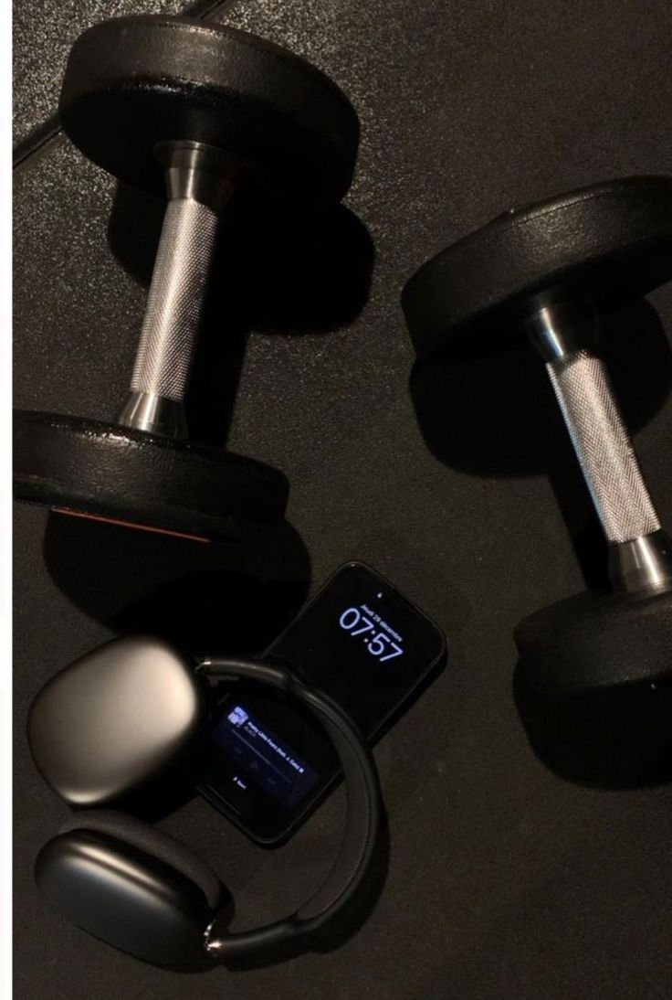

Biography
Welcome to Captured Moments, your gateway to the world of stunning photography and visual storytelling. My website is a curated collection of breathtaking images that capture the beauty of everyday life, extraordinary adventures, and the emotions that define us. Founded with a passion for photography, Captured Moments serves as a platform for showcasing diverse photographic styles, from landscapes and portraits to street and wildlife photography. Whether you’re a seasoned photographer, an aspiring shutterbug, or simply an admirer of the art, this is the place to find inspiration and connect with a like-minded community. My mission is to celebrate the power of photography in freezing time, sharing stories, and evoking emotions. Dive into our gallery, explore tips and tricks in our blog, and join us in celebrating the artistry behind every click of the shutter.
Awesome Right?
Wanna get into Photography
This here is an example that photography is in our day to day lives
It can be used to commemorate important moments in our lives
Gallery
Aesthetic Takes

This collection of cameras is more than just equipment
’re the tools that capture moments, tell stories, and bring visions to life.
Covers
Try new stuff
This image reprents a year of possibilities
Look ahead and try something new
Inspiring isnt it?
this